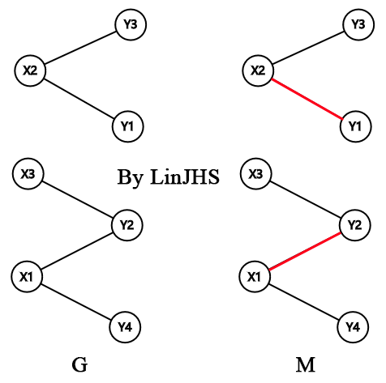

二分图
定义
二分图又称作二部图，是图论中的一种特殊模型。设 \(G=(V,E)\) 是一个无向图，如果顶点 \(V\) 可分割为两个互不相交的子集 \((A,B)\) ，并且图中的每条边 \((i,j)\) 所关联的两个顶点 \(i\) 和 \(j\) 分别属于这两个不同的顶点集 \((i \in A,j \in B)\) ，则称图 \(G\) 为一个二分图。
无向图 \(G\) 为二分图的充分必要条件是，\(G\) 至少有两个顶点，且其所有回路的长度均为偶数。
二分图
判断二分图的常见方法是染色法：
开始对任意一未染色的顶点染色，之后判断其相邻的顶点中：
- 若未染色则将其染上和相邻顶点不同的颜色，
- 若已经染色且颜色和相邻顶点的颜色相同则说明不是二分图，否则继续判断，可以使用 BFS 或 DFS 。
易知：任何无回路的的图均是二分图。
二分图最大匹配
求二分图最大匹配可以用最大流或者匈牙利算法。
给定一个二分图 \(G\) ，在 \(G\) 的一个子图 \(M\) 中，\(M\) 的边集中的任意两条边都不依附于同一个顶点，则称 \(M\) 是一个匹配。
选择这样的边数最大的子集称为图的最大匹配问题 (maximal matching problem) 。
如果一个匹配中，图中的每个顶点都和图中某条边相关联，则称此匹配为完全匹配，也称作完备匹配。
匈牙利算法

前置知识
下面 \(M\) 是 \(G\) 的一个匹配。
- \(M\)-交错路：\(p\) 是 \(G\) 的一条通路，如果 \(p\) 中的边为属于 \(M\) 中的边与不属于 \(M\) 但属于 \(G\) 中的边交替出现，则称 \(p\) 是一条 \(M\)-交错路。如：路径 \((X_3,Y_2,X_1,Y_4)\) ，\((Y_1,X_2,Y_3)\) 。
- \(M\)-饱和点：对于 \(v\in V\) ，如果 \(v\) 与 \(M\) 中的某条边关联，则称 \(v\) 是 \(M\)-饱和点，否则称 \(v\) 是非 \(M\)-饱和点。如 \(X_1,X_2,Y_1,Y_2\) 都属于M-饱和点，而其它点都属于非 \(M\)-饱和点。
- \(M\)-可增广路：\(p\) 是一条 \(M\)-交错路，如果 \(p\) 的起点和终点都是非 \(M\)-饱和点，则称 \(p\) 为 \(M\)-可增广路。如：\((X_3,Y_2,X_1,Y_4)\)（注：不同于网络流的增广路）。
增广路的定义（也称增广轨或交错轨）：
若 \(P\) 是图 \(G\) 中一条连通两个未匹配顶点的路径，并且属于 \(M\) 的边和不属于 \(M\) 的边（即已匹配和待匹配的边）在 \(P\) 上交替出现，则称 \(P\) 为相对于 \(M\) 的一条增广路径。
由增广路的定义可以推出下述三个结论： 1. \(P\) 的路径个数必定为奇数，第一条边和最后一条边都不属于 \(M\) 。 2. 将 \(M\) 和 \(P\) 进行取反操作可以得到一个更大的匹配 \(M'\) 。 3. \(M\) 为 \(G\) 的最大匹配当且仅当不存在M的增广路径。
算法轮廓
- 置 \(M\) 为空；
- 找出一条增广路径 \(P\) ，通过异或操作获得更大的匹配 \(M'\) 代替 \(M\) ；
- 重复操作 2 直到找不出增广路径为止。
复杂度
时间复杂度：
- 最坏
O(n^3) - 邻接表
O(nm)
空间复杂度：
- 邻接矩阵
O(n^2) - 邻接矩阵
O(n+m)
示例代码
/*
版权声明：以下代码为CSDN博主「LinHunYoR」的原创文章，遵循CC 4.0 BY-SA版权协议，转载请附上原文出处链接及本声明。
原文链接：https://blog.csdn.net/qq_38956769/article/details/80238896
*/
/************匈牙利算法**************/
#include<cstdio>
#include<vector>
#include<cstring>
using namespace std;
#define MAX_N 512
vector<int>Adj[MAX_N];
int n,m,ans;
void AddEdge(int u,int v){
Adj[u].push_back(v);
Adj[v].push_back(u);
}
/**********读入数据，建图*************/
void Init(){
scanf("%d%d",&n,&m);
for(int i=1;i<=n;i++){
int si,k;
scanf("%d",&si);
for(int j=1;j<=si;j++){
scanf("%d",&k);
k+=n;
AddEdge(i,k);
}
}
}
/************深搜找增广路************/
bool Vis[MAX_N+1];
int Match[MAX_N+1];
bool Dfs(int u){
for(int i=0;i<Adj[u].size();i++){
int v=Adj[u][i];//深搜下一个节点
if(Vis[v])//如果已经访问过那就不访问了
continue;
Vis[v]=true;//标记访问过
if(!Match[v]||Dfs(Match[v]))//查找增广路
{//如果v未匹配或者可以更新原来的增广路
Match[v]=u;
Match[u]=v;
return true;
}
}
return false;
}
/*********匈牙利算法主函数**********/
void Solve(){
for(int i=1;i<=n;i++){
memset(Vis,false,sizeof Vis);
if(!Match[i])
if(Dfs(i))
ans++;
}
}
int main(){
Init();
Solve();
printf("%d\n",ans);
return 0;
}
注：部分资料来源于百度百科

This work is licensed under a Creative Commons Attribution-NonCommercial-NoDerivatives 4.0 International License.